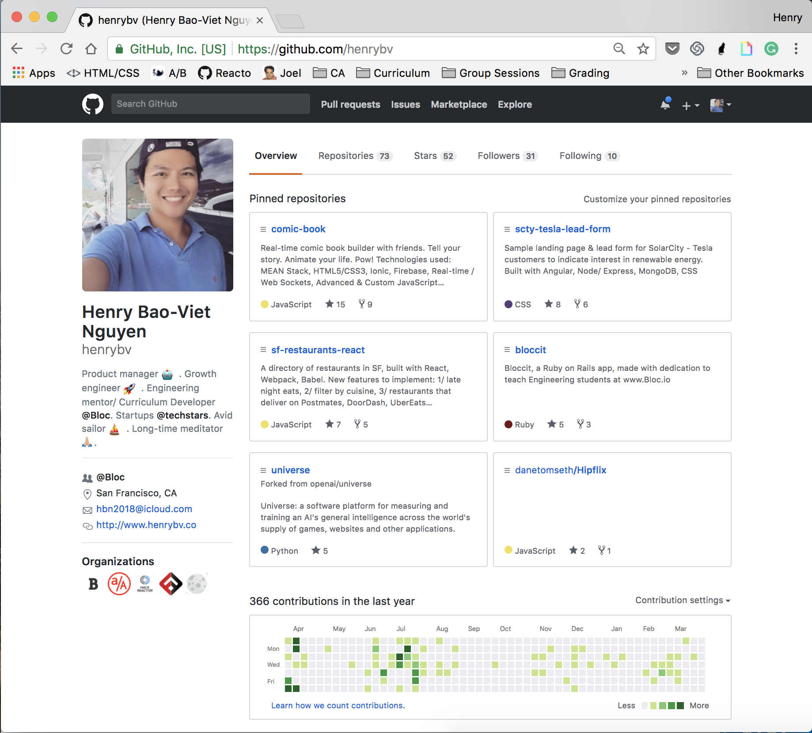
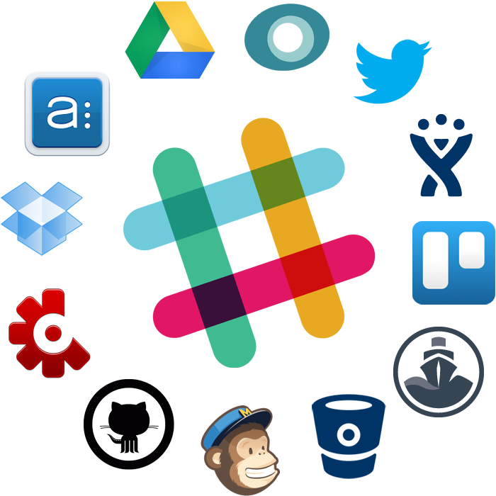

Building your own app with popular APIs

github/henrybv
Overview
- What are APIs & How do APIs work?
- Guide to use APIs in your own app
- Popular apps built with Node, React, Uber, Slack, Spotify, Google Maps APIs
Expectations
- A solid grasp of JavaScript & understanding of how web applications work üëç
- Please participate by answering my questions üò∫
Links
1. What is an API?

API = Application Programming Interface:
A software intermediary that allows two applications to talk to each other.


We live in an API economy
- 90% of world's data created past 2 years.
- 75 B internet connected devices by 2020
- Business data becomes invaluable.
– S. Somasegar, VP of Microsoft’s developer division:
"In the world of cloud computing, APIs are the new currency."
Popular APIs
Uber API

API platforms in an interconnected world

Slack API
Slack Fund

2. RESTFUL APIS: How do they work?


API:
endpoint to do a task when someone requests it.Server:
powerful computer that runs an APIClient:
program that exchanges data with a server through an APIRequest:
computer that sends request to serverResponse:
computer responds to request, returns response data.
Example: CoinDesk API call
REQUEST:
https://api.coindesk.com/v1/bpi/currentprice.json
? RESPONSE ?
Useful tools & links
Download: Postman tool & JSON View Chrome extension.

What is RESTful API?
- REST = representational state transfer
- Follows HTTP protocol
- Defines specific operations the application does to satisfy CRUD (create, read, update, delete) requirements.
API actions:
- GET: to fetch data
- POST: to add new data
- PUT: to edit existing data
- DELETE: to delete data
RESTful API

Working with API response data
- You want some data from service X. Does service X have an API? (Hooray, it does, and it’s free!)
- Look at the API documentation. Figure out if there is a URL that retrieves the kind of data you’re looking for. There is? Great!
- Sign up for an API key if one is required.
- Figure out what parameters you need to include in the URL in order to get the exact data you want.
- Load the URL, parameters included, into your browser/ Postman. Get back a response! If it didn’t work, go back to step 4.
- Take that data and unpack it. For more on this, read XML and JSON.
Working with API response data
API Authentication

3. START BUILDING
Step-by-step guide review:
- Sign up for a developer account
- Get an API key (if required)
- Read documentation for list of URLs -> test APIs
- Build your app
- Reference example apps & open-source community when stuck
- Share app with Bloc community & the world
1. Sign up for a developer account
2. Get an API key for authentication (if required)
Why API key?
3. Read documentation & retrieve list of URLs
Note: Determine which API to use
Which Slack APIs should I use?
Which API is right for your Slack app?
- https://api.slack.com/web
- https://api.slack.com/events-api
- https://api.slack.com/docs/conversations-api
QUESTIONS?
4. Example Apps
4. Example Apps
Spotify Code Snippets/ Example Apps